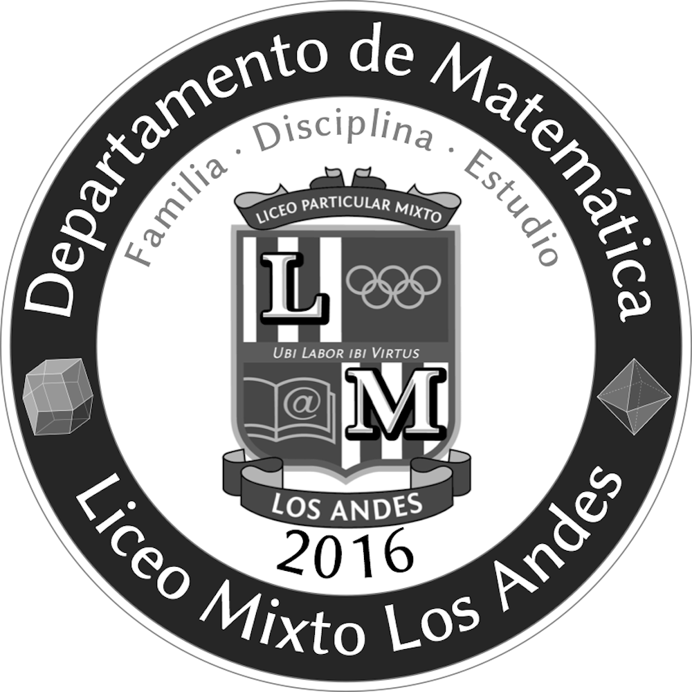

Enseñanza Media TP-HC. 2014 a la fecha, jornada completa · LMLA · Prof. Hans Sigrist

Non eram nescius, Brute, cum, quae summis ingeniis exquisitaque doctrina philosophi Graeco sermone tractavissent, ea Latinis litteris mandaremus, fore ut hic noster labor in varias reprehensiones incurreret. nam quibusdam, et iis quidem non admodum indoctis, totum hoc displicet philosophari. quidam autem non tam id reprehendunt, si remissius agatur, sed tantum studium tamque multam operam ponendam in eo non arbitrantur. erunt etiam, et ii quidem eruditi Graecis litteris, contemnentes Latinas, qui se dicant in Graecis legendis operam malle consumere. postremo aliquos futuros suspicor, qui me ad alias litteras vocent, genus hoc scribendi, etsi sit elegans, personae tamen et dignitatis esse negent.
Estimadas y estimados estudiantes, reciban la bienvenida a este espacio académico y de desarrollo personal. En esta oportunidad, la asignatura Resolución de Problemas, está dirigida a diferentes audiencias provenientes de carreras profesionales, todas ubicadas en su respectivo 4to. semestre lectivo. Como es costumbre al compartir espacios, se hace primordial la práctica de la convivencia, es decir, el saber vivir y convivir con otros y otras. Además, de velar por la puntualidad y la asistencia, es necesario que se plantee un compromiso con la asignatura, con la consecución de sus propias metas, y no sólo con ésta, sino con todo acto o proceso que inicie.
En este espacio se proveerá de los recursos y medios necesarios para cursar el primer ramo de nuestra Línea Sello Institucional, que promueve la infusión de las Habilidades Blandas (HB) en nuestra comunidad. Como miembro del Equipo Sello UAC reciban una cordial bienvenida primero a nuestra Institución, y por cierto a las actividades que desarrollamos en nuestra línea. Nuestro principal propósito, es diseminar, promover y generar las HB en nuestros estudiantes, de modo que se tratará de una enseñanza interactiva: experimentaremos, practicaremos, reforzaremos y reflexionaremos, en torno a las oportunidades de aprendizaje de las HB. Mis mejores deseos en este nuevo desafío que juntos iniciamos, Hans.
En adelante me referiré a las mencionadas carreras que constituyen la audiencia, como «comunidad», con ello favorecemos el sentido de equipo y de convivencia.
Las distintas audiencias se distribuyen de la manera siguiente:
- Email: hans.sigrist@uac.cl
- Twitter: @hsigrist
- Web: hsigrist.github.io
El curso de «Investigación cualitativa» profundiza en técnicas y análisis desde el marco de la investigación con variables cualitativas en el ámbito de las ciencias sociales.
Para ello, aborda el diseño y ejecución de la investigación cualitativa, con énfasis en aspectos epistemológicos, metodológicos y técnicos. De esta manera, en su desempeño profesional el estudiante será capaz de realizar y/o analizar críticamente investigaciones cualitativas a partir de su fundamento metodológico. Esta asignatura prepara al estudiante para la investigación que deberá enfrentar el su «Seminario de Grado».
Esta asignatura aporta al perfil de egreso, en tanto colabora en el objetivo de entregar al estudiante elementos metodológicos para la compresión de investigaciones de su especialidad o afines.
Asegurar en los estudiantes la adquisición de conocimientos teórico – prácticos básicos para la utilización de técnicas y análisis de metodología cualitativa.
Los siguientes artículos selectos, corresponden a lecturas previas que forman parte del material referencial de la asignatura. Se solicitará la lectura de los mismos mediante aviso en Novedades. Tomar las acciones necesarias, cuando corresponda.
A continuación comparto con la comunidad el manual oficial de la asignatura, es primordial que lo descargue y utilice como guía de estudio. Recuerde que en ningún caso, este manual pretende ser una completa visión del panorama comunicativo en organizaciones, ni menos aún, la última palabra en comunicación efectiva. Como siempre, nuestros manuales Sello, son un acercamiento a las principales tendencias actuales en torno a la temática que cubran. Un aprendiz profundo, reconoce como propio el deber «ir más allá» y ser un «consumidor eficiente de información». Recuerde que, en plena Sociedad del Conocimiento, la información prolifera en todas partes.
En la actual asignatura utilizaremos el denominado Método de la Lectura Previa (MLP), que permitirá a la audiencia llegar a clases mejor equipados con insumos previamente asignados/propuestos. La idea es simple, con ello favorecemos la clase en una experiencia dialógica y podremos de esta forma intercambiar puntos de vista respecto de algún tema de interés.
Este método resulta muy interesante y al mismo tiempo es una excelente oportunidad de crecimiento personal, en tanto promueve la relación de conceptos, para ello es necesario que dada la ocasión de una MLP, puedan establecer relaciones causales o comparaciones, clasificaciones. Aquí la memoria juega un rol importante, existe una crítica respecto a que los métodos de enseñanza relacionados con construir conocimiento «limpian» la memoria, en tanto solo promueven el aprendizaje experiencial y no la memoria. Pues bien, con este método podrán infundir una práctica que apunte a remediar este problema: la memoria almacenará cierto stock de conceptos y datos a partir de los cuales podrán recrear y pensar.
La invitación es a dar una lectura comprensiva, aquí verán que ahora la memoria ya no basta, debemos incorporar a su vez una comprensión léxica para ir avanzando hacia temáticas más avanzadas o complejas.
Lo anterior, lo evidenciarán en la medida que sean capaces de responder a diversas preguntas que estableceré con el único objetivo de ir «subiendo» en lo niveles de comprensión lectora.
En adelante, cuando se utilicemos el MLP, debe velar por dar justo cumplimiento a lo solicitado, no procrastine, no aplaze, tómese un tiempo y ubique la acción en un lugar que no propicie las interrupciones.
Como una forma de fomentar su acervo, les propongo la creación de un Glosario, de modo recopilen conceptos e ideas que permitan su uso pertinente en diversos ámbitos de la Resolución de Problemas. Pueden incorporar los conceptos que desees, como mínimo debieran manejarse los propuestos.
Utilice para estos efectos, el documento Word que puede descargar en el enlace siguiente:
Los términos sugeridos, han sido extraídos del Manual de Resolución de Problemas, socializado más abajo en la sección Recursos:
muestreo ·
Una vez finalice su Glosario, debe cargarlo en el enlace siguiente: